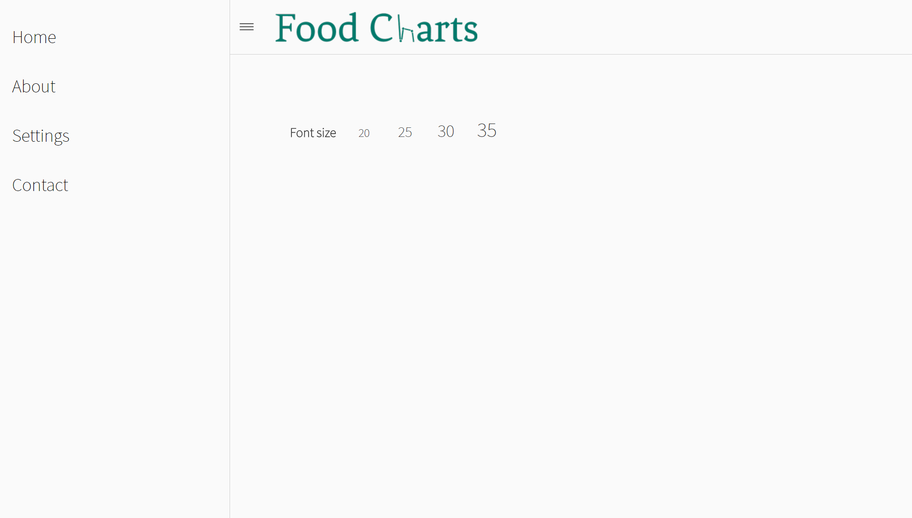
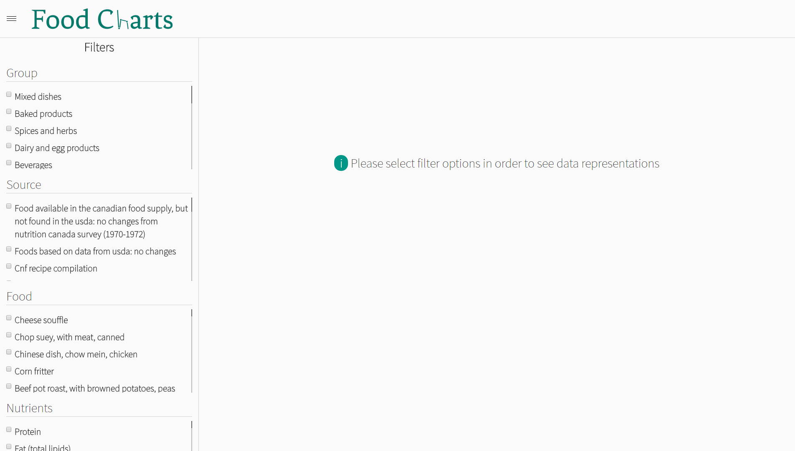
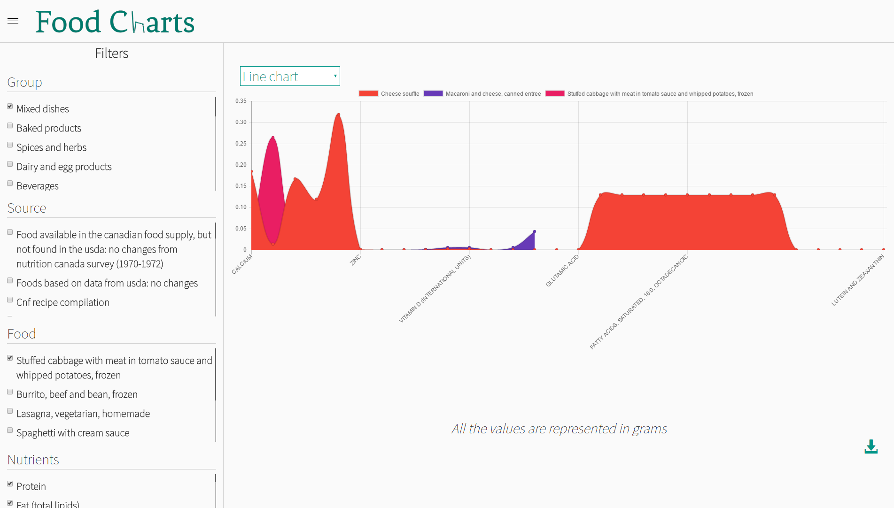
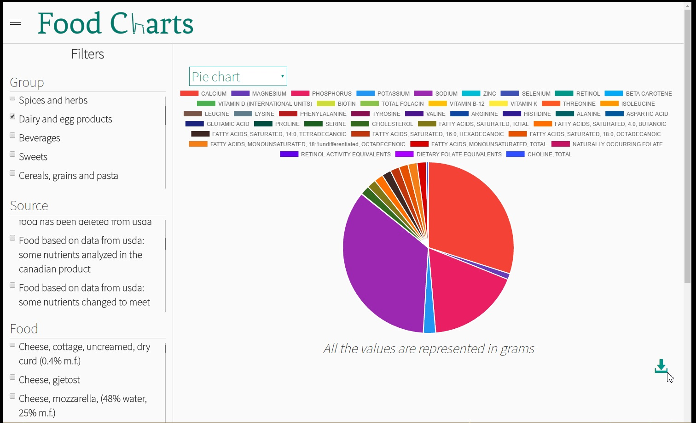
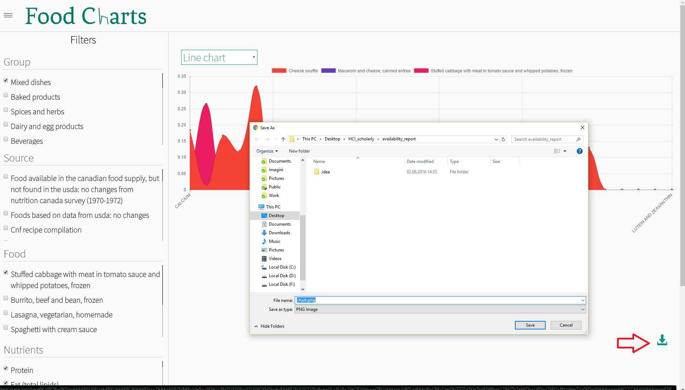

2. Features
The application delivers the following main features (also view screenshots).
- Ability to navigate through pages from left menu.
-
Ability to choose a category from tha Home page.:

-
Ability to choose the default font:

-
Apply various filters:

-
Visualize diagram and compare nutrient value for multiple foods:

-
Update diagram type:

-
Download diagram as PNG file:
